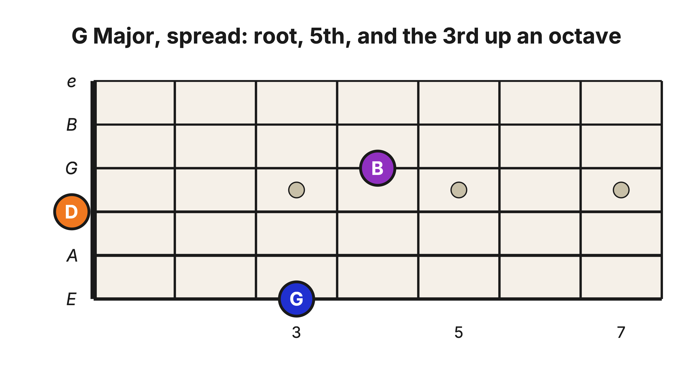
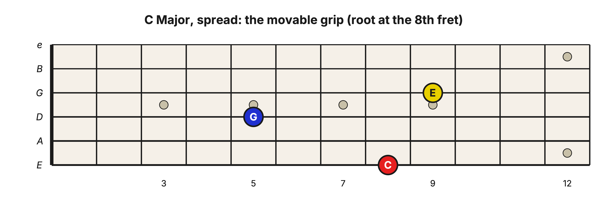
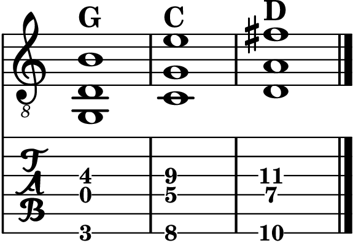

Level 2 · Chapter 25
The Fretboard: The Spread Triad Shape on the E-D-G String Set
The theory chapter spread the triad by lifting its 3rd an octave: 1–5–10, root still on the floor. On the neck, that spelling becomes one grip: root on the low E string, skip the A string, the 5th on the D string, and the 3rd-up-an-octave on the G string. Let’s build it out of parts you own.
Build it from the power chord
Start with the G power chord: root G at the 3rd fret of the low E string, the 5th (D) at the 5th fret of the A string. That A-string D has a twin you know well: the open D string, the very same pitch. So refinger the power chord’s two pitches wider apart: G on the low E string, D on the open D string, and let the A string sit out. Same two notes, more neck between them.
Now add the spread’s top voice: the 3rd, an octave up. B lives on the G string at the 4th fret, one fret past the root’s fret. That is the whole grip:

The skipped A string stays quiet the same way it did in the 6ths chapter: lean the underside of your root finger against it, or pick the three strings fingerstyle.
Make it movable
Fret all three notes and the grip goes anywhere. The recipe, counted from the root’s fret: 5th three frets back on the D string, 10th one fret forward on the G string. Here is C, with its root at the 8th fret:

It is a reach: try your index on the D string, middle or ring on the low E, and pinky on the G string. If the stretch fights you at first, arpeggiate it (one note at a time, all ringing) while your hand learns the span. It opens up quickly.
And the mood note still does its one-fret trick. The top voice is the 3rd (whatever octave it lives in), so pull it back one fret, down onto the root’s fret, and the chord turns minor: a minor 10th over the same root and 5th.
Now play something
Remember G, C, and D from the E-shape chapter, the three chords that have started a thousand songs? Here they are as spread triads: G at the nut with its open-string 5th, then the movable grip at the 8th and 10th frets.

Let each chord ring and listen to the top voice: B, then E, then F♯, a little melody floating a 10th above the bass. That is the sound guitarists mean by “playing in 10ths,” and it is why this voicing earns its stretch.
Hear it
- Close versus spread: play the close C triad on the E-A-D set (8th, 7th, and 5th frets, from the triad-shapes chapter), then the spread C (8th, 5th, 9th). Same root, same three jobs, two textures: the close one speaks in a single block; the spread one rings like three separate voices.
- The top voice leads: play the spread G one note at a time, low to high, letting everything ring: the root lands, the 5th widens it, and the 3rd arrives high and clear, like a singer entering. That top-note clarity is this voicing’s whole job.
Try it yourself
Build the spread shape with its root at the 5th fret of the low E string. Which chord is it? Name all three notes and their jobs, then make it minor. Check below.
Answer key
A Major. The root A at the 5th fret of the low E string, the 5th (E) at the 2nd fret of the D string, and the 3rd (C♯) at the 6th fret of the G string, a Major 10th above the root. Pull the top note back one fret to C natural and it becomes an A minor spread triad.
Count what the last few chapters handed you: close shapes on four string sets, three inversion homes per chord, and now a spread grip that throws the roof open. The root still names the chord. The floor, and the air, are yours to choose.
Unit 5 checkpoint: inversion, spacing, and interval transfer
This checkpoint tests whether you can make three related decisions separately: which note is in the bass, how far apart the voices are, and which interval you are hearing or playing.
- Write C Major in root position, first inversion, and second inversion. Name the bass note in each, then do the same for A minor.
- On one string set, play the three inversions of C Major in a local area. Name the bottom note before each strum.
- Build a Major 6th and a minor 6th from two called lower notes. State the 3rd that each 6th inverts.
- Play C Major once as a close triad and once as a root-position spread triad. Identify what changed in each comparison: bass note, spacing, or neither.
Pass rule and spacing
Pass when each chord keeps its correct three pitch classes, every inversion is named from its bass, each 6th has the correct inverted 3rd, and close versus spread is described as spacing rather than inversion. Re-test one item at the next practice session, then repeat the full checkpoint after three further sessions and again while preparing the capstone.